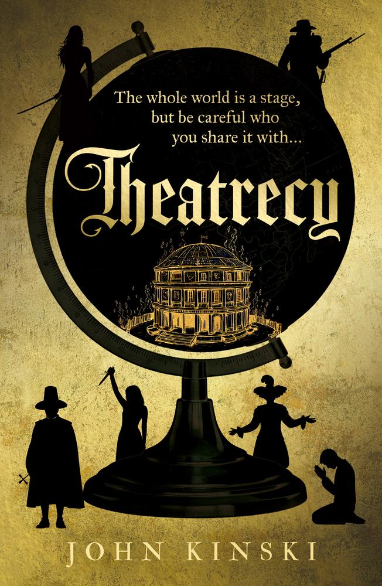
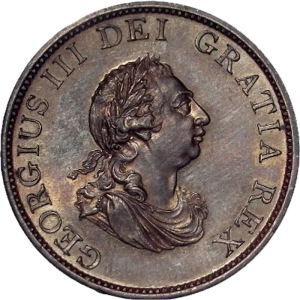

John Kinski — Novelist & Historian
Historian, novelist, and storyteller. From the riot-torn streets of modern London to the closed playhouses of the English Civil War.
Author of Theatrecy and Tottenham Boys, with the Regency suspense novel Halfpenny nearing completion.
John Kinski is a British novelist with a BA and MPhil in History from the London School of Economics. His fiction moves between seventeenth-century England and contemporary London — from the closed playhouses of the Civil War to the riot-torn streets of Tottenham — with an eye for character, political upheaval, and dark humour.
Theatrecy, published by Troubador in June 2026, is a black comedy about one man's mission to restore the Globe Theatre. Tottenham Boys is a suspense thriller set during the 2011 London riots, endorsed by Hanif Kureishi. Halfpenny, a Regency suspense novel, is nearing completion.
Based in Ivinghoe, Buckinghamshire, John also works as a sports injury therapist. Explore his books below, read the full author biography, or get in touch via the contact page.

Theatrecy
A hilarious black comedy set during the English Civil War. Gideon, a would-be actor, travels between Parliamentarian London and Royalist Oxford on a desperate mission to restore the Globe Theatre — through romance, espionage, murder, and dark humour.
Bibliography
The books
Historical comedy, contemporary thriller — and a forthcoming Regency suspense novel.
Historical · Dark comedy · 2026
Theatrecy
One man's quest to restore the Globe Theatre during the English Civil War.
View bookThriller · Suspense
Tottenham Boys
A press photographer returns to Tottenham as the 2011 riots erupt across London.
View book
Forthcoming · Regency suspense
Halfpenny
A suspense novel set in Regency England — nearing completion.
View details